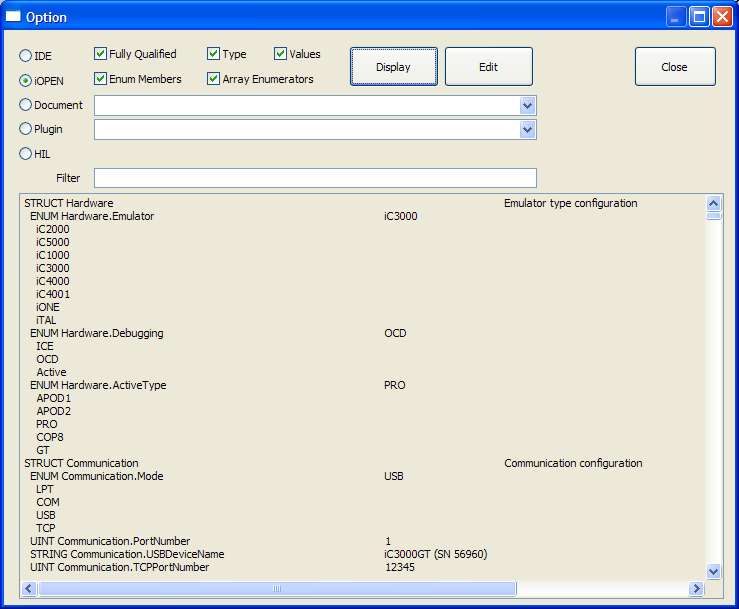

This page can be used to set winIDEA settings. There are thousands
of options available, and new ones are added with new releases. To
see all the available options, go to winIDEA, and select
option Help | Display Option .... A dialog opens,
where we can select the interface and information to be displayed.

This way we can set communication ports, configure trace triggers,
download files, ...